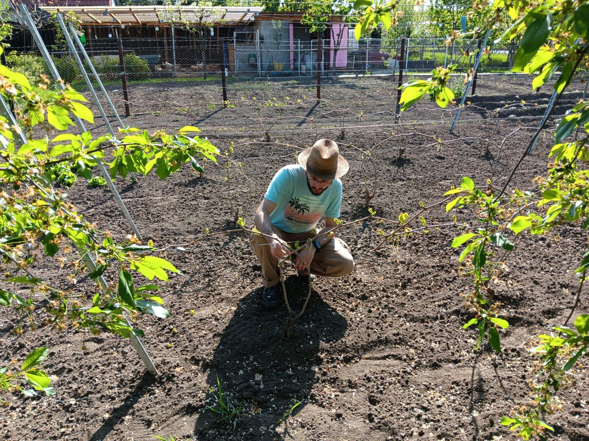

Welcome to my website!
I built it to showcase my projects, passions and hobbies, in a way that is harder to do with a CV.
You are welcome to take a look around and find out who I am!

"It is better to waste your time working, than to waste your time for nothing"
With these sections, I want to show you what I like "wasting" my time with.
About Me
Someone once told me that engineers can look at a bunch of blinking LEDs and find beauty in it. The truth is that, when I look at a bunch of servers nicely packed together, each blinking its own LEDs and thinking its own "thoughts", I really find beauty in it.
But blinking leds are not the only thing I find beauty in. From the way atoms fit together to build molecules, to the way energy turns into light in LEDs, and the wonderful, mysterious, gorgeous deep sky photographs, all these build a net of concepts and ideas that I love to explore. I belive that no subject can stand isolated of the rest, and I find all subjects interesting.
That being said, I do have some preferences. In the professional domain my passion is telecommunication, with its signals, modulations, and the ever-present Euler's number. While in the more personal side, I love space.
To share this with others, including you dear viewer, I built this website. Feel free to explore it and see if you like what I like to do. Thank you for visiting, and have a nice stay!